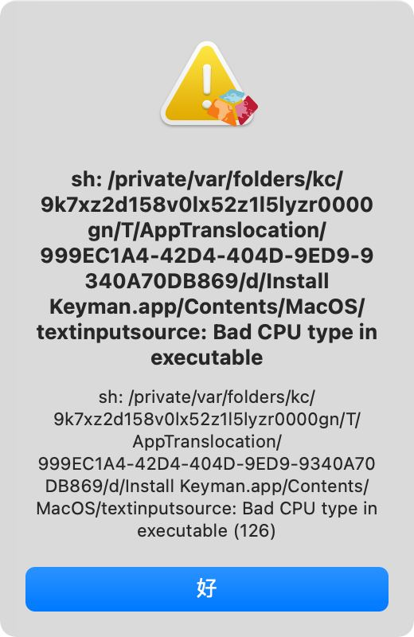
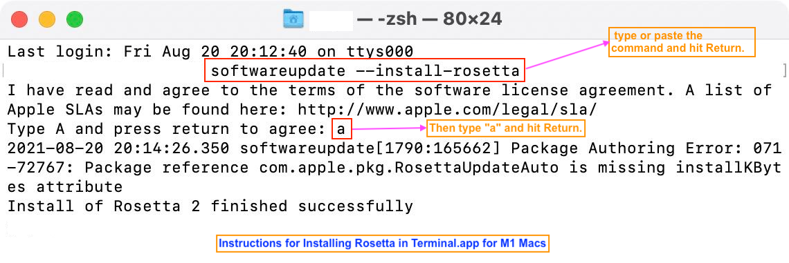
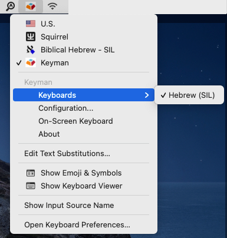
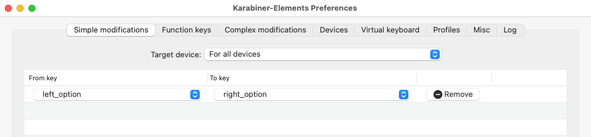

Instructions for installing Keyman.app and the Hebrew Legacy (SIL) keyboard on MacOS
Two Steps to install the keyboard for MacOS
Note: The following instructions are for the installation of Hebrew keyboard for Keyman.app on MacOS. If you need to type on Win or mobile devices, please follow the instructions above.
- STEP 1: You need to install Keyman on the Mac. Keyman is a free app.
- Go to the Keyman.app Download page.
- Click the "Download" button to download the Keyman installation file (.dmg file).
- Double click to open the file. In the new window, then double click the Keyman icon to start installation.
- ❗ Note: If you have an M1 Macbook, you must have Rosetta installed in order to install Keyman. Otherwise, you will encounter an error like this:

- You need first to install Rosetta before installing Keyman. To install Rosetta, follow these steps:
- Open Terminal.app
- Copy and Paste this command into Terminal.app:
softwareupdate --install-rosetta
- Hit the Return key.
- When it says "Install of Rosetta 2 finished successfully", you may close Terminal.app and install Keyman.

- After install Keyman, you may need to set the configurations for Keyman. Follow the instructions here.
- STEP 2: Install the Hebrew Legacy (SIL) keyboard.
- Method 1
- Go to the Hebrew Legacy (SIL) keyboard Download page.
- Click the "macOS download" button to download the keyboard layout file (.kmp file).
- After download, you may double click to install the keyboard to Keyman.
- Method 2
- Althernatively, you may install the Hebrew SIL keyboard from the Keyman app.
- Click the Keyman icon on the menu bar.
- Then click "configuration...".
- In the next window, Click the "Download keyboard..." button at the bottom-left corner.
- In the next window, type "Hebrew SIL" and hit "Search".
- You will see the "Hebrew (SIL)" keyboard. Click it and follow the instructions to install it.
- If you can't install the "Hebrew Legacy (SIL)" keyboard, you need to set the configurations first. Follow the instructions here.
- Make sure you have switched to "Keyman" as your keyboard input method.
- See screenshot below.
- If you don't have Keyman, you need to double check step 1.
- If you don't have "Hebrew SIL", you need to double check step 2.

- Done! You may start using it now! You may test your Hebrew typing at Hebrew Typing Test.
- This page also has some tips for typing Hebrew.
Keyboard Layout
- Please visit this page to see the keyboard layout. (Note: Some browsers do not display the characters properly. I tried Microsoft Edge, Vivaldi, Safari, and Firefox. Only Firefox displays everything correctly.
- You may also visit this page to view the keyboard layout (pp. 6–9).
- Note: We will use Keyman app to install the Hebrew Legacy (SIL) keyboard. We will not be using the SBL Hebrew keyboard. They have the same SIL layout, but the SBL Hebrew keyboard on Mac has different unicode character values for Sin and Shin. This
may cause some issues.
Trouble Shooting:
- Typing Qamets Hatuph and Hateph Qamets
- On Windows, we use Right Alt + O to type Qamets Hatuph, and Right Alt + Shift + A to type Hateph Qamets (Hatuph).
- On MacOS, similarly, we use Right Option + O to type Qamets Hatuph (◌ׇ), and Right Option + Shift + A to type Hateph Qamets (Hatuph) (◌ֲ). Left Option won't work.
- If you still have issues typing Qamets Hatuph and Hateph Qamets (Hatuph), please restart your Mac to see if it is fixed. If not, please follow the instructions here and see if it can fix the issue.
- If you have any other issues, please restart your Mac to see if it is resolved (99% issues can be resolved by a restart).
- If you still have issues, please contact me. When you do, make sure to include these information:
- The OS version
- Describe the issue as specific as possible. If possible, include some screenshots.
- If it is related to typing specific letters, let me know which keys you typed (e.g., Right Option + O).
Support Keyman
A Small Trick: remap L-Opt to R-Opt
- I'm very used to using Left Option instead of Right Option. I use Karabiner-Elements to remap Left Option to Right Option. Here is the setting:

- Note: If you use this setting, you won't be able to type Left Option anymore unless you remove this setting or quit Karabiner-Elements. (If you are not sure what it means, you don't need to worry about it. It will not affect you at all.)
Alternative Keyboard
{kind=link}
{kind=link}
{kind=link}
{kind=link}